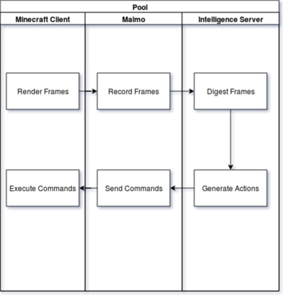

Thu 7 Jun 2018¶
record video streams as individual frames rather than video - eg MalmoPython.MissionSpec.recordBitmaps(MalmoPython.FrameType.DEPTH_MAP).
But this API seems to be not working.
From Malmo/src/MissionRecordSpec.h on Malmo’s GitHub page, bitmaps and MP4 cannot both be recorded for a given video producer.
After checking what frame types Malmo defined, I tried the type VIDEO, and things run successfully. Frames are recorded in ppm format, which can be processed in a very straightforward way (but this is also a highly inefficient format). For the record,
Intelligence System¶
I am going to seperate intelligence system, which plays the role of brain for our agent, from Malmo. The working relationship between Minecraft, Malmo and this system can be summarize as the following flowchart:
Networking Prototype¶
- Directory: Research/work_table/
- Files: server02.py, client02.py
In order to build the system, we need to facilitate video stream feed from Malmo end to Intelligence system end. We decided to use socket to achieve this.
Today I have built a very simple server and client pair, as can be easily found under work table directory. Simply run (with Python 2.7)
python server02.py
to start up the server and run
python client02.py
to open a client. Then you should see server consistenly sending “HEY YOU” message to client, as displayed on client side. You can open at most 100 clients simultaneously. The server will simply provide the same service to every client connected to it, since our ultimate goal is to provide one single video stream to these clients.
About Design And Codes¶
Python simply does not provide a ready-to-use module for our video streaming feed purpose. SocketServer.TCPServer seems to fit. But a little research revealed that it is mainly designed for being the base class for BaseHTTPServer etc. Real time stream protocol (RTSP) seems not supported. So I need to write my own server and client to enable consistent data feed.
We used 1 thread for listening and accepting incoming connect request. When we accept a client, we create a service thread for it to consistently provide service. Specific service will be implemented in derived class by overriding MyBaseServer.serve method.
On the other hand, client is single-threaded. And any derived class of MyBaseClient only needs to override method work to specify jobs on client side.